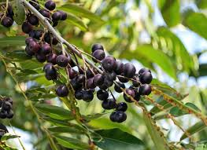
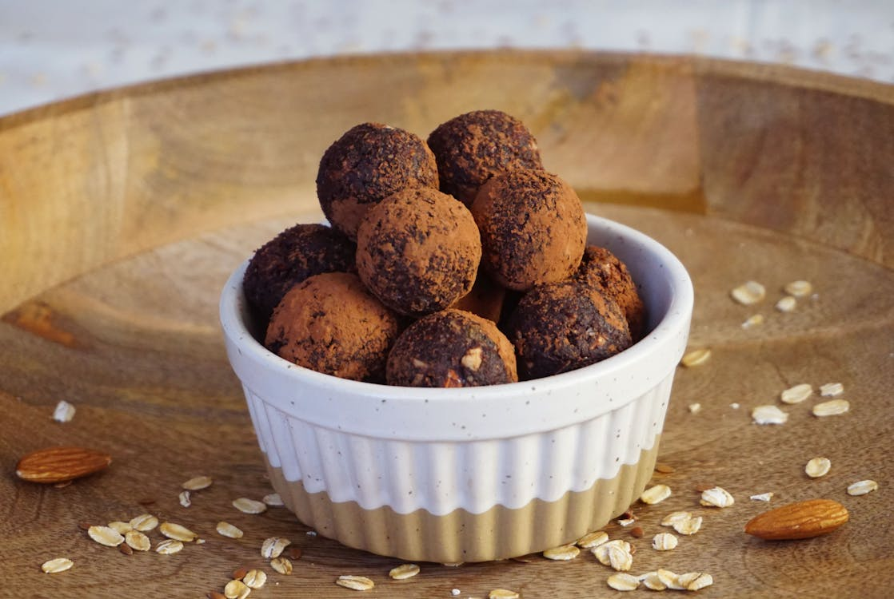
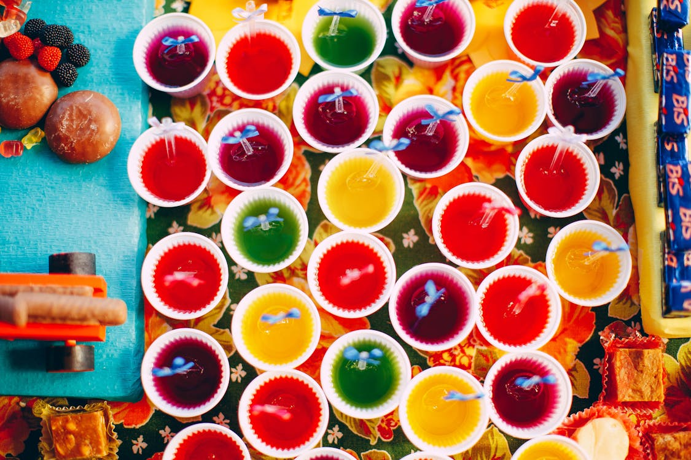
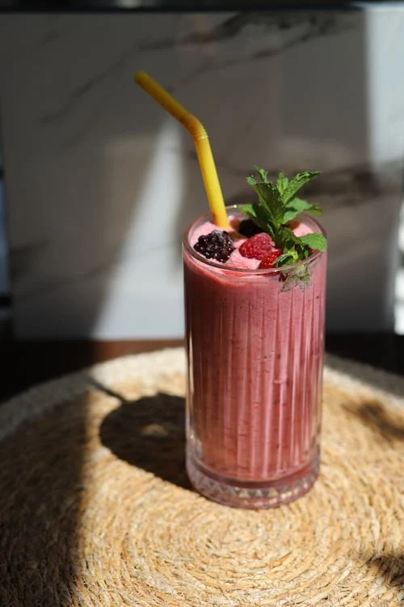

O açaí tem origem na Floresta Amazônica, onde cresce naturalmente em áreas úmidas e alagadas. Ele vem principalmente da espécie Euterpe oleracea, muito comum no Brasil, especialmente na região Norte. Há séculos, povos indígenas e ribeirinhos já consumiam o açaí como base da alimentação, valorizando seu alto poder energético e seu papel cultural. Com o tempo, o fruto se popularizou em todo o país e hoje é conhecido mundialmente.

O açaizeiro se desenvolve melhor em regiões quentes, úmidas e com bastante água, como as áreas de várzea. O plantio é feito por sementes ou mudas, e a planta começa a produzir
frutos entre 3 e 5 anos após o cultivo.
A principal época de colheita ocorre entre os meses de julho e dezembro, período conhecido como “safra do açaí”. Fora desse período, ainda há produção, mas em menor
quantidade (entressafra).
A floração do açaizeiro ocorre geralmente alguns meses antes da frutificação. As flores são pequenas, de cor clara e organizadas em cachos chamados inflorescências. Elas são fundamentais para a formação dos frutos e dependem de fatores como clima e umidade para se desenvolver bem.
Euterpe oleracea (Açaí-do-Pará): é a espécie mais conhecida e utilizada comercialmente. Ela se destaca por ser muito resistente e produtiva. Uma característica importante dessa planta é o chamado perfilhamento, que significa que ela cresce formando vários troncos juntos, como uma touceira.
Euterpe precatoria (Açaí-Solitário): é comum no Amazonas e no Acre. Diferente da outra espécie, ela cresce com um único tronco. Seus frutos têm mais polpa e são mais ricos em antioxidantes, porém o crescimento da planta é mais lento.
Açaí Espada e Açaí Branco: : o açaí espada recebe esse nome pelo formato alongado e levemente curvado de suas folhas e cachos, que lembram uma espada, sendo uma variação menos comum da planta. Já o açaí branco é uma mutação rara do açaí tradicional que, mesmo maduro, mantém a cor verde-oliva; sua polpa é mais clara, cremosa e de sabor mais suave, o que o torna bastante valorizado na gastronomia, especialmente em nichos mais sofisticados.
| Nutriente | Quantidade |
|---|---|
| Energia | 70 kcal |
| Fibras | 2g |
| Gorduras boas | 5g |
O consumo de açaí pode trazer vários benefícios para a saúde:
Brigadeiro de Açaí:
Ingredientes:
- 1 lata de leite condensado
- 1 colher (sopa) de manteiga sem sal
- 2 colheres (sopa) de polpa de açaí
- 2 colheres (sopa) de chocolate branco (opcional)
- 1/2 xícara de leite em pó
- Granulado a gosto
Modo de preparo:
Misture o leite condensado, a manteiga e o açaí na panela. Se quiser, adicione o chocolate branco.
Leve ao fogo baixo, mexendo sempre.
Quando desgrudar do fundo (10 a 15 min), desligue.
Deixe esfriar, enrole em bolinhas e passe no granulado.

Gelatina de Açaí:
Ingredientes:
- 200 ml de polpa de açaí
- 1 sachê de gelatina sem sabor (12g)
- 200 ml de água (100 ml quente e 100 ml fria)
- 1/4 de xícara de açúcar ou adoçante (opcional)
Modo de preparo:
Dissolva a gelatina na água quente, mexendo bem.
Em outra tigela, misture o açaí com o açúcar e a água fria.
Adicione a gelatina dissolvida e misture bem.
Coloque em taças e leve à geladeira por cerca de 4 horas até firmar.

Milkshake de Açaí e Banana:
Ingredientes:
- 200 ml de polpa de açaí
- 1 banana madura
- 200 ml de leite
- 1 colher (sopa) de mel (opcional)
- 2 a 3 pedras de gelo (opcional)
Modo de preparo:
Coloque o açaí, a banana, o leite e o mel no liquidificador.
Bata até ficar homogêneo.
Se quiser, adicione gelo e bata novamente.
Sirva em seguida.
